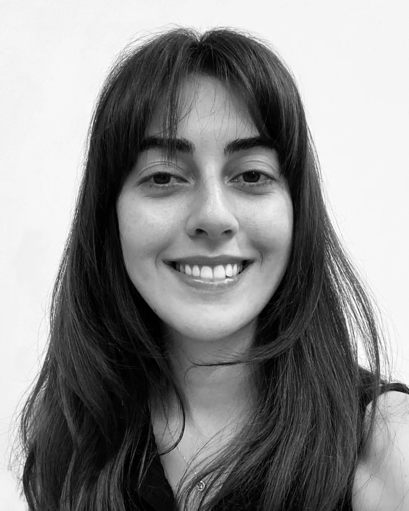

Artist Statement
My paintings emerge from an ongoing dialogue with water — its surfaces, depths, and the light that moves across them. In the Dalga (Wave) series, I return again and again to the sea as both subject and metaphor: for change, for force, for the sublime indifference of nature toward human scale.
Working in watercolor and oil, I am drawn to the threshold between control and accident. Water as medium mirrors water as subject — it resists, bleeds, and surprises. Each painting is a negotiation between intention and the unpredictable life of the paint.
The landscape paintings — Ayçiçekleri, Tarla, Geliboluya Giderken — are records of looking, made in place or from memory. They share with the sea paintings a concern with atmosphere, with the quality of light at a particular hour, with what a place feels like from the inside.
Bio
Çağla Öztürk is a painter based in Istanbul. She studied Visual Arts and Painting at Yeditepe University and works across watercolor, oil, and mixed media installation.
Her large-scale installation Büyük Dalga (2024) brought together over forty individual panels to form a continuous seascape.
